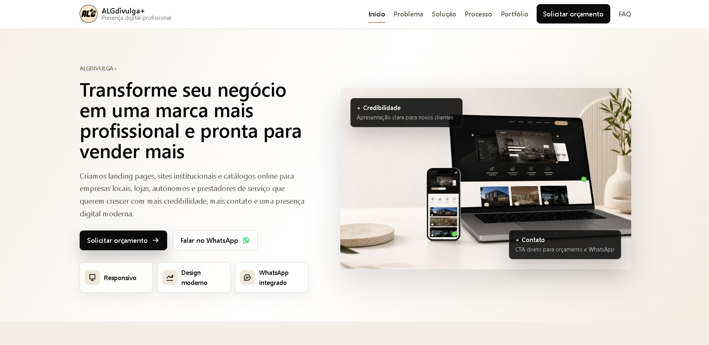
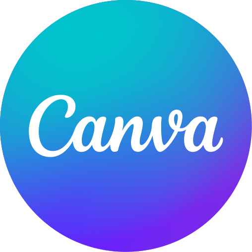
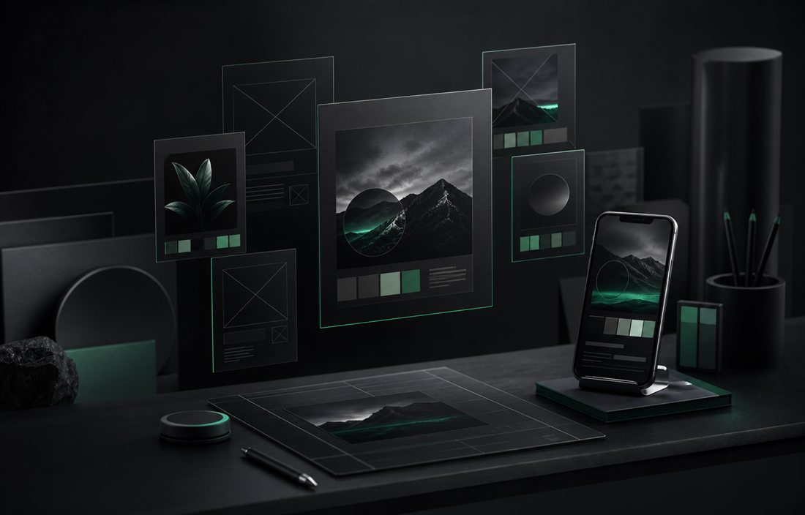
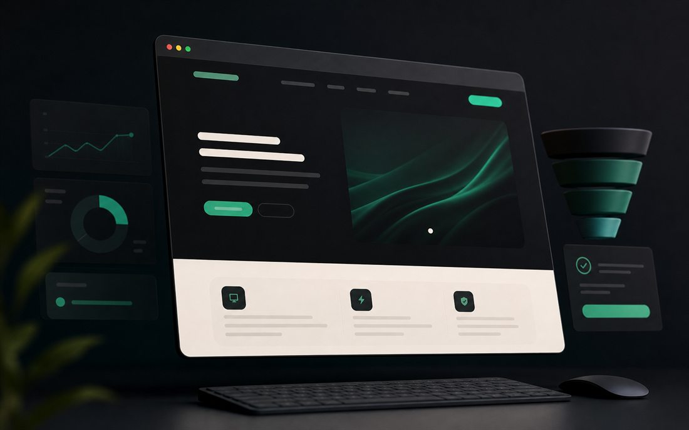
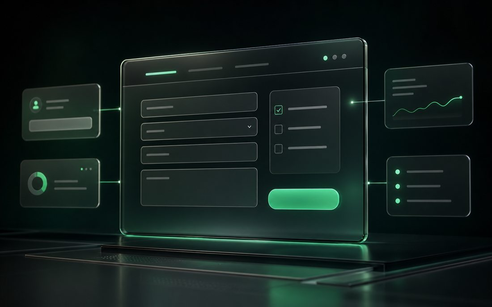
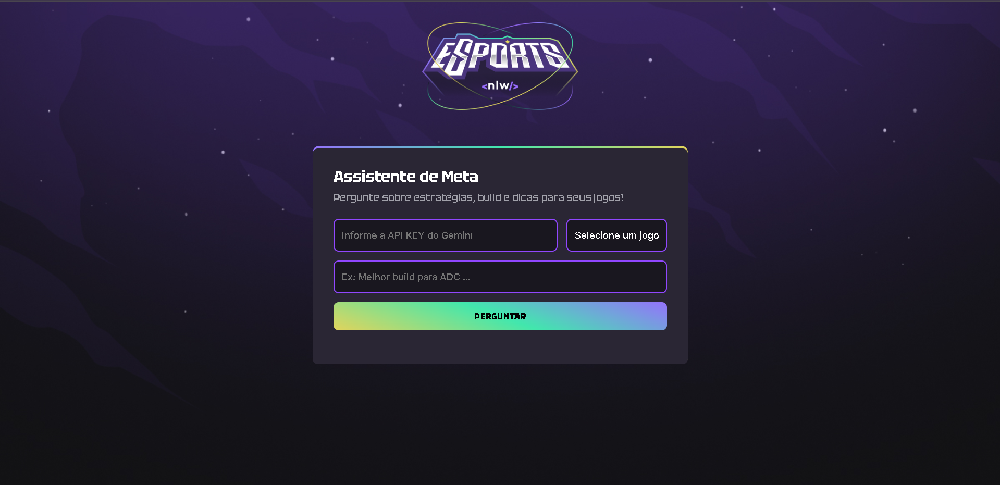
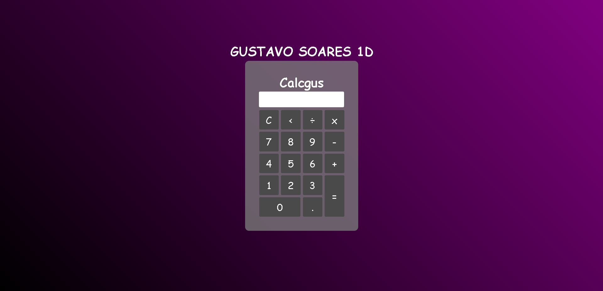
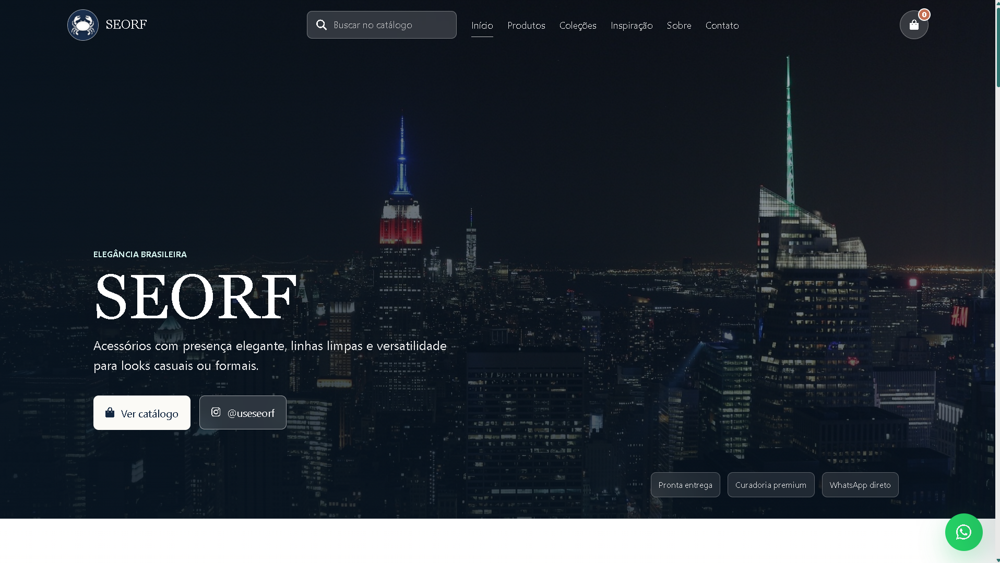
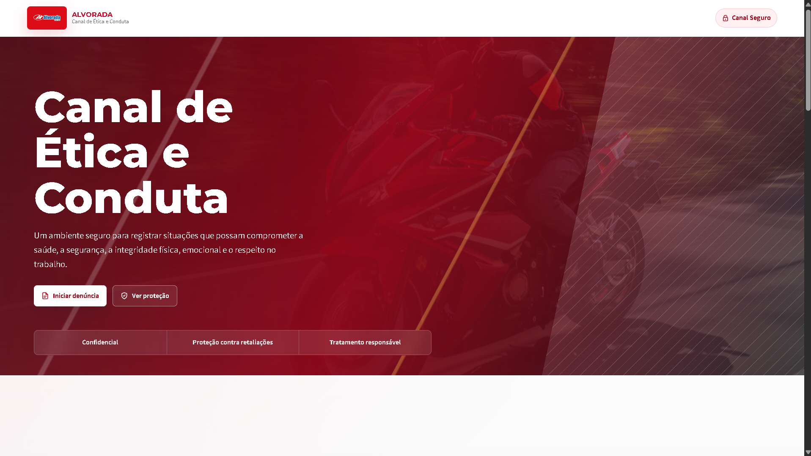

ALGdivulga+
Landing page criada para apresentar serviços de design e social media com clareza, credibilidade e foco em conversão.
Sou estudante de programação e desenvolvimento web. Com apenas 16 anos, já domino diversas linguagens e foco em criar experiências digitais únicas.
Comecei na programação aos 10 anos, mais por curiosidade do que por plano de carreira. Eu queria entender como jogos, sites e interfaces saíam da ideia e viravam algo que alguém pudesse usar. Desde então, meu aprendizado tem sido bem prático: estudo, testo, erro, refaço e transformo cada projeto em um jeito de evoluir.
Hoje, aos 16, estou focado em desenvolvimento web e em construir experiências digitais com visual forte, boa lógica e propósito claro. Gosto de unir programação, design e matemática para resolver problemas de forma organizada, sem perder personalidade. Meu próximo passo é me consolidar como Full-Stack, cursar Engenharia da Computação e crescer em projetos que me desafiem de verdade.

CanvaEntregas visuais e digitais para marcas, profissionais e eventos que precisam parecer mais organizados, confiáveis e prontos para vender.

Artes para posts, anúncios e divulgação com visual mais profissional, identidade consistente e foco em chamar atenção rápido.
Pedir serviço
Páginas diretas para apresentar uma oferta, explicar valor, destacar diferenciais e conduzir o visitante para o contato.
Pedir serviço
Formulários de contato, captação, briefing e solicitação de serviços com boa aparência, clareza e experiência simples.
Pedir serviçoConvites modernos para eventos, aniversários e ocasiões especiais, com visual personalizado e apresentação marcante.
Pedir serviço
Landing page criada para apresentar serviços de design e social media com clareza, credibilidade e foco em conversão.

Interface acadêmica com IA generativa para orientar jogadores com estratégias, builds e respostas contextualizadas.

Aplicação funcional desenvolvida para consolidar lógica JavaScript, eventos de interface e estrutura visual responsiva.

Projeto desenvolvido para venda de acessórios, em presença digital e apresentação profissional da marca.

Plataforma digital de venda de acessórios, desenvolvida para transmitir exclusividade e sofisticação através de uma experiência visual moderna.

Loja virtual de roupas criada com foco em identidade visual forte, catálogo organizado e experiência de compra intuitiva.

Desenvolvimento de uma plataforma web para recebimento de denúncias internas, focada em confidencialidade, usabilidade e organização das informações para o setor de Recursos Humanos.
Escrevendo o primeiro código C#.
Fundamentos do Design Gráfico.
Escrevendo o primeiro código C#.
especialização/formação em Discover
Fundamentos da programação Web, estruturação de páginas com HTML, estilização de páginas com CSS, conceitos essenciais da internet, primeiros passos com JavaScript, lógica de programação, introdução prática à Inteligência Artificial, LLMs (Large Language Models), agentes de IA, técnicas de engenharia de prompt e o uso de ferramentas como Gemini.
HTML.
CSS.
criar um site HTML, CSS e JavaScript.
Git e GitHub.
curso de programação, design gráfico trabalhando com adobe Photoshop, e criação de jogos.
Javascript
Estou disponível para novos projetos. Envie uma mensagem para discutirmos sua ideia.